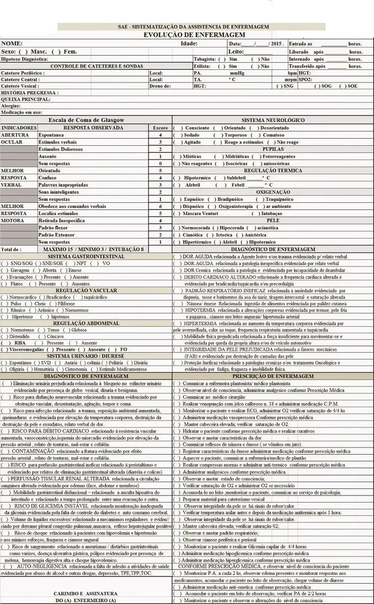

O que é NANDA, NIC e NOC?
Guia Completo para Enfermeiros na Sistematização da Assistência de enfermagem
A Sistematização da Assistência de Enfermagem (SAE) é a ferramenta metodológica que organiza o cuidado do enfermeiro. NANDA, NIC e NOC são linguagens padronizadas essenciais para aplicar a SAE de forma eficaz, garantindo um cuidado baseado em evidências e uma comunicação clara entre os profissionais.
O que são NANDA, NIC e NOC?
Em nossas calculadoras voce verá o botão NANDA, NIC e NOC ao lado do botão calcular e gerar pdf. Esse botão gera uma busca personalizada no google somando pontuação da escala + gerar diagnostico de enfermagem da NANDA, Gerar implementação de intervenções de enfermagem do NIC e Gerar Observação de resultados das implementaçoes da NOC, ela auxiliará aos profissionais a buscar dados científicos para realizar a implementação da SAE. Estas três classificações são pilares fundamentais no processo de enfermagem e na Sistematização da Assistência de Enfermagem (SAE), permitindo que os enfermeiros pensem criticamente e documentem seu raciocínio clínico de forma padronizada.
NANDA International (NANDA-I)

NANDA significa North American Nursing Diagnosis Association (Associação Norte-Americana de Diagnósticos de Enfermagem).
O que é: É a classificação para os Diagnósticos de Enfermagem. Um diagnóstico de enfermagem é um julgamento clínico sobre as respostas de um indivíduo, família ou comunidade a problemas de saúde/processos de vida reais ou potenciais.
Importância: Permite que o enfermeiro identifique as necessidades específicas do paciente e formule problemas de saúde que ele, como enfermeiro, pode tratar e gerenciar.
Exemplo prático:
- Paciente com pneumonia apresenta dificuldade para respirar.
- O enfermeiro, ao avaliar, pode diagnosticar: "Padrão Respiratório Ineficaz" (NANDA).
- Outro exemplo: Paciente acamado com vermelhidão na região sacral: "Risco de Integridade da Pele Prejudicada" (NANDA).
NIC (Nursing Interventions Classification)

NIC significa Classificação das Intervenções de Enfermagem (Nursing Interventions Classification).
O que é: É uma classificação abrangente de intervenções de enfermagem, ou seja, de todas as ações que um enfermeiro realiza para atingir os resultados esperados para o paciente. Cada intervenção tem uma definição e uma lista de atividades que o enfermeiro pode realizar.
Importância: Padroniza as ações de enfermagem, facilitando o planejamento do cuidado, a comunicação e a avaliação da eficácia das intervenções.
Exemplo prático:
- Para o diagnóstico "Padrão Respiratório Ineficaz" (NANDA), o enfermeiro pode planejar a intervenção "Manejo das Vias Aéreas" (NIC).
- As atividades relacionadas a esta intervenção podem incluir: monitorar frequência e ritmo respiratório, posicionar o paciente para otimizar a ventilação, oferecer oxigenoterapia, etc.
- Para o "Risco de Integridade da Pele Prejudicada", a intervenção pode ser "Cuidados com a Pele: Tratamento Tópico" (NIC), com atividades como: inspecionar a pele, aplicar creme barreira, realizar mudança de decúbito.
NOC (Nursing Outcomes Classification)
NOC significa Classificação dos Resultados de Enfermagem (Nursing Outcomes Classification).
O que é: É uma classificação de resultados do paciente, que são os estados, comportamentos ou percepções mensuráveis do indivíduo, família ou comunidade que são influenciados pelas intervenções de enfermagem. Cada resultado possui uma definição, indicadores e uma escala de mensuração.
Importância: Permite ao enfermeiro avaliar a eficácia das intervenções implementadas e a progressão do paciente em relação aos objetivos de cuidado. É fundamental para demonstrar o impacto da assistência de enfermagem.
Exemplo prático:
- Para o diagnóstico "Padrão Respiratório Ineficaz" e a intervenção "Manejo das Vias Aéreas", o resultado esperado pode ser "Estado Respiratório: Ventilação" (NOC).
- Os indicadores incluiriam: frequência respiratória (de 1- gravemente comprometido a 5- não comprometido), profundidade da respiração, saturação de oxigênio.
- Para o "Risco de Integridade da Pele Prejudicada", o resultado pode ser "Integridade Tecidual: Pele e Membranas Mucosas" (NOC), com indicadores como: hidratação da pele, cor da pele, ausência de lesões.
A Importância da NANDA, NIC e NOC na SAE
A Sistematização da Assistência de Enfermagem (SAE) é um método científico que organiza o cuidado de enfermagem em etapas. NANDA, NIC e NOC se encaixam perfeitamente nessas etapas, proporcionando uma linguagem comum e um roteiro claro:
- Coleta de Dados: O enfermeiro coleta informações sobre o paciente.
- Diagnóstico de Enfermagem: Com base nos dados, o enfermeiro formula um diagnóstico NANDA. Ex: "Dor Aguda".
- Planejamento: Para cada diagnóstico NANDA, o enfermeiro estabelece resultados esperados (NOC) e planeja intervenções (NIC).Para "Dor Aguda" (NANDA): Resultado esperado (NOC): "Controle da Dor", com indicadores como "Dor referida" e "Expressões faciais da dor" em uma escala de 1 a 5 (grave a nenhuma). Intervenção (NIC): "Manejo da Dor", com atividades como: "administrar analgésicos conforme prescrição", "realizar massagem", "orientar técnicas de relaxamento".
- Implementação: O enfermeiro executa as intervenções NIC planejadas.
- Avaliação: O enfermeiro avalia se os resultados NOC foram atingidos, verificando a melhora do paciente através dos indicadores.
Utilizar NANDA, NIC e NOC na SAE proporciona:
- Padronização: Uma linguagem universal que todos os enfermeiros compreendem.
- Visibilidade: Torna o cuidado de enfermagem mais visível e mensurável.
- Qualidade: Melhora a qualidade e a segurança do paciente, pois o cuidado é planejado e avaliado de forma sistemática.
- Pesquisa: Facilita a pesquisa em enfermagem, permitindo analisar a eficácia de diferentes intervenções.
- Autonomia: Reforça a autonomia profissional do enfermeiro.
Em resumo, NANDA, NIC e NOC não são apenas "listas" ou "catálogos", mas ferramentas dinâmicas que empoderam o enfermeiro a oferecer um cuidado mais qualificado, individualizado e focado nos resultados do paciente, sendo indispensáveis na prática da Sistematização da Assistência de Enfermagem.
Referência:
- Herdman, T. H., & Kamitsuru, S. (Org.). (2018). Diagnósticos de enfermagem da NANDA-I: definições e classificação 2018-2020. Artmed Editora.
- Bulechek, G. M., Butcher, H. K., Dochterman, J. M., & Wagner, C. M. (Eds.). (2018). Classificação das Intervenções de Enfermagem (NIC). Elsevier Health Sciences.
- Moorhead, S., Johnson, M., Maas, M. L., & Swanson, E. (Eds.). (2018). Classificação dos Resultados de Enfermagem (NOC). Elsevier Health Sciences.